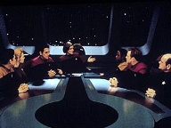
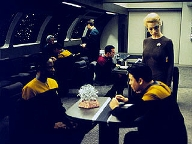
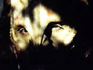
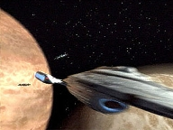
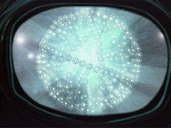
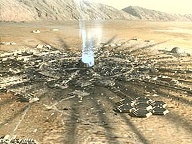

| MANCHETE
DO EPISDIO
Partculas
ameaam todo o quadrante
Episdio
anterior | Prximo episdio Sinopse:
Data Estelar: 51781.2  Quando
um smbolo estranho aparece nas telas dos computadores da Voyager, Janeway
passa a dar ordens incomuns sem fornecer explicaes. Alega apenas executar
uma misso altamente secreta chamada Diretriz mega. Seven a nica pessoa
a bordo que sabe do que se trata, pois retm os conhecimentos de capites da
Frota assimilados pelos Borgs. O que acontece que os sensores da nave
detectaram a molcula mega, considerada perigosa pela Federao porque pode
provocar um fenmeno altamente instvel e catastrfico. As ordens de Janeway,
como capit, so destruir a ameaa, mas Seven acredita que o poder da
substncia deve ser estudado em detalhes. J que os Borgs acreditam que a
molcula representa a perfeio, Seven concorda em ajudar Janeway a
implementar a diretriz, pois ter a chance de estudar o fenmeno de perto.
Quando Chakotay convence a capit de que precisa dos
recursos da tripulao para cumprir sua tarefa, ela rene os oficiais
superiores para explicar suas ordens. Janeway diz que a molcula de mega a
mais poderosa substncia de que se tem notcia e pode criar uma ruptura
subespacial que impossibilitaria viagens em velocidade de dobra. A Voyager parte
para a localizao das molculas com seus tripulantes cientes de que, se
falharem, ficaro presos para sempre no Quadrante Delta.
 Seven comea a trabalhar em uma cmara de ressonncia
harmnica capaz de estabilizar mega, enquanto a capit lidera um grupo
avanado. Os oficiais encontram um planeta no qual pesquisadores trabalhavam
para criar a molcula, quando uma exploso os exps a radiao. Antes de
ser transportado para a Enfermaria, o lder dos cientistas diz a Janeway que
uma das molculas sobreviveu na cmara de testes primrios. Na Voyager, ele
pede a Seven que no destrua mega, afirmando que a descoberta do fenmeno
vital para seu povo.
Quando entra na cmara de testes, Janeway descobre que
h molculas suficientes para atingir metade do Quadrante Delta. Para
elimin-las na tecnologia de ressonncia, elas precisam ser transportadas a
bordo da Voyager. Seven, agora convencida de que mega no deve ser
destruda, pede que Chakotay converse com a capit. Com o material na rea de
carga, a tripulao parte, perseguida por naves aliengenas.
Em rea de espao aberto, Janeway se prepara para ejetar
a cmara com as molculas e depois destru-las com um torpedo modificado.
Seven consegue neutralizar quase metade da amostra e, pouco antes da ejeo,
testemunha um fenmeno inexplicvel: mega se estabilizou espontaneamente.
Quando o torpedo disparado, a Voyager parte em dobra mxima, eliminando
qualquer trao da molcula. A capit consegue cumprir com sua diretriz e
Seven acredita ter vivenciado sua primeira experincia religiosa.
Comentrios:
 "The Omega Directive" um bom
episdio, mas mediano para os ndices da temporada. daqueles que divertem para a hora,
mas que surgem do vcuo e no acrescentam absolutamente nada trama maior.
Claro, bem escrito e executado, tem um diferencial: ele parece realmente indito. A
diretriz que d nome histria um protocolo secreto de emergncia da
Frota, do qual apenas capites ou oficiais de patente superior tm
conhecimento. Para se ter noo da periculosidade de omega, as ordens so
claras: eliminar a molcula a qualquer custo. Alm de altamente inflamvel,
a substncia destri o subespao, impossibilitando viagens em velocidade de
dobra. Para a Voyager, evidentemente o risco tem um significado todo especial.
Uma exploso significaria a priso da nave no Quadrante Delta para sempre.
H alguns elementos interessantes aqui. A comear por
Seven of Nine. Janeway no est totalmente sozinha para carregar a misso,
pois sua nova tripulante retm todos os conhecimentos dos capites da Frota
assimilados pelos Borgs. Alm disso, tem uma vantagem: a objetividade que
falta Federao. O protoloco fruto de medo e ignorncia. Para os
Borgs, omega deve ser criada e estabilizada. Exemplifica perfeio. Apesar
dos riscos, soa estranho que uma entidade cientfica ceda aos receios e leve
seus capites a afirmar que "a fronteira final tem limites que no
devem ser ultrapassados".
 Com todo o vai-e-vem, destacam-se no roteiro os
pequenos momentos de personagem. E Seven brilha. Com certeza, seu
potencial (por ora) perene. Ela se torna a cada instante mais
interessante, complexa e multifacetada. A atuao de Ryan, mais uma vez,
merece aplausos. So dignos de meno alguns momentos da histria. O
primeiro quando Seven conversa com Chakotay na rea de carga. Como homem
espiritualizado, claro que ele entende a sua aflio. Fica evidente que
omega o mais prximo de uma "crena" que os Borgs j tiveram.
Embora cumpra ordens, Seven encara a possvel destruio das molculas uma
verdadeira perda pessoal. Quem no lutaria contra aquilo? "Eu
perseguiria [minha f] com todo o meu corao", reconhece o
comandante.
A segunda cena memorvel acontece quando a personagem
confronta Janeway, tambm na rea da carga, afirmando que poderia "e
ainda pode" estabilizar as partculas. A capit tem de lembr-la que
no deseja entrar em seu caminho, mas seria irresponsvel e arrogante correr
um risco que afetaria metade do quadrante. O olhar de consentimento da ex-Borg,
frio, forte. Ela se v forada a recuar. Aqui, j demonstra compreenso
da cadeia de comando da Voyager. Bem diferente da postura de "Prey",
por exemplo.
Em terceiro lugar, destaca-se o momento em que omega
comea a se estabilizar espontaneamente e Seven observa as molculas em
completa estupefao. At ento, os Borgs tinham desconsiderado como
triviais as experincias religiosas das culturas assimiladas. A ex-zango
comea a perceber que, talvez, seu julgamento estivesse equivocado. De
repente, o caminho para a claridade no a assimilao. Sem dvida, uma
constatao marcante em sua vida.
Outros personagens fornecem grandes momentos. Como a
Voyager est sozinha (e a capit mais ainda), Chakotay consegue convencer
Janeway de que a tripulao pode e deve ajud-la em sua misso. Depois de
relutar, ela cede. Esse apelo reflete bem o "ar de famlia" da
quarta temporada. Parece ser o tema recorrente. E isso muito bom. Veio
tarde demais at.
 Mas vamos a outras apreciaes de "The Omega
Directive". Os aliengenas no so hostis, como 95% dos vizinhos
do Quadrante Delta. So um povo que atravessa uma crise energtica e
encontrou, na molcula, a sua salvao. Quem Janeway para impedi-los
"na marra"? Esquecendo-se - bvio - a questo da Primeira
Diretriz, o fato que a Voyager invadiu instalaes alheias e roubou as
descobertas. No apenas isso, mas destruiu o achado. Pareceu previsvel o
ataque nave. Mas, dadas as circunstncias, no chegou a forar a barra.
O furo no roteiro que no adianta acabar com as molculas, se o
laboratrio (ou o que sobrou dele) e os cientistas permanecem.
O que impede os aliengenas de prosseguir com os
experimentos depois da passagem da Voyager? Parece difcil de acreditar que
Janeway simplesmente daria a misso por completada apenas porque destruiu
aquela amostra de omega. Provavelmente, a Frota tambm acabaria com as
chances de a molcula voltar a ser produzida. Como a Voyager faria isso?
Esbarramos numa questo moral, pois o nico meio seria assassinar os
pesquisadores. Claro que no aconteceu, mas se o poder de omega to
grande, absolutamente nada impediria que uma exploso em qualquer ponto da
galxia afetasse a Federao. E, contra isso, nada se poderia fazer. Outra observao; por que Janeway apagou
todos os relatrios depois de concluda a misso? E se a Voyager vier a
encontrar outras molculas de omega ao longo da viagem?
 Por fim, pareceu que a inexplicvel
estabilizao das molculas foi uma "sada fcil" para a
situao. Seria mais realista que: a)
ou Seven desobedecesse ordens e agisse por conta prpria; b) ela seguisse as
ordens da capit e vivesse com sua frustrao. Em ambos os casos, haveria
conflito entre as duas personagens. Poderia sair muita coisa boa dali. Mas,
ainda assim, compreende-se por que os roteiristas recorreram ao
"milagre". A cena final de Seven fecha com chave de ouro o segmento.
Esse mrito ningum tira.
Citaes:
Kim - "Is there anything you don't
know?"
("H alguma coisa que voc no saiba?")
Seven - "I was Borg."
("Eu fui Borg.")
Kim - "I was Borg. That's what you always say but what does it mean?
You've got the knowledge of ten thousand species in your head?"
("Eu fui Borg. Isso o que sempre diz, mas o que quer dizer? Voc tem os
conhecimentos de dez mil espcies em sua cabea?")
Seven - "Not exactly. Each drone's experiences are processed by the
Collective. Only useful information is retained."
("No exatamente. As experincias de cada zango so processadas pela
Coletividade. Apenas informaes teis so retidas.")
Kim - "Still, that probably makes you the most intelligent human being
alive."
("Ainda assim, isso provavelmente a torna o ser humano mais inteligente
vivo.")
Seven - "Probably."
("Provavelmente.")
Seven - "Omega is infinitely complex
yet harmonious. To the Borg it represents perfection. I wish to understand
that perfection."
("Omega infinitamente complexa, mas harmnica. Para os Borgs, ela
representa perfeio. Eu quero entender essa perfeio.")
Janeway - "You have your orders. I
expect you to follow them."
("Voc tem as suas ordens. Espero que as siga.")
Chakotay - "That's expecting a lot. You're asking me to abandon my
Captain and closest friend, without even telling me why."
("Isso esperar demais. Est me pedindo para abandonar minha capit e
minha melhor amiga sem ao menos dizer por qu.")
Janeway - "If it were a simple matter of trust I wouldn't hesitate to
tell you, but we've encountered situations where information was taken from us
by force."
("Se se tratasse apenas de confiana, eu no hesitaria em lhe dizer, mas
nos deparamos com situaes em que a informaes foram tiradas de ns a
fora.")
Tuvok - "Captain, I'd be negligent if I
didn't point out that we are about to violate the Prime Directive."
("Capit, eu estaria sendo negligente se no ressaltasse que estamos
prestes a violar a Primeira Diretriz.")
Janeway - "For the duration of this mission, the Prime Directive has
been rescinded."
("Pela durao desta misso, a Primeira Diretriz est rescindida.")
Seven - "Six of Ten, this is not your
assignment."
("Seis de Dez, essa no a sua tarefa.")
Kim - "Please, stop calling me that."
("Por favor, pare de me chamar assim.")
Seven - "You're compromising our productivity. I'm reassigning you to
chamber maintenance. Your new designation is Two of Ten."
("Est comprometendo a nossa produtividade. Estou lhe redesignando para a
manuteno da cmara. Sua nova designao Dois de Dez.")
Kim - "Wait a minute, you're demoting me? Since when do the Borg pull
rank?"
("Espere um pouco. Est me rebaixando? Desde quando os Borgs impem
patentes?")
Seven - "A Starfleet protocol I adapted. It's most useful."
("Um protocolo da Frota que eu adaptei. bastante til.")
Kim - "I'm glad you're not the Captain."
("Fico feliz que no seja a capit.")
Tuvok - "It's unfortunate we can't
study this phenomenon in more detail. We may not have the opportunity again."
(" lamentvel que no possamos estudar esse fenmeno mais
detalhadamente. Podemos nunca mais ter a oportunidade de novo.")
Janeway - "Let's hope we never do."
("Esperemos que no.")
Tuvok - "A curious statement from a woman of science."
("Um comentrio curioso de uma mulher da cincia.")
Janeway - "I'm also a woman who occasionally knows when to quit. Take
another look at your tricorder. Omega's too dangerous. I won't risk half the
quadrant to satisfy our curiosity. It's arrogant, and it's irresponsible. The
final frontier has some boundaries that shouldn't be crossed. And we're
looking at one."
("Tambm sou uma mulher que ocasionalmente sabe quando desistir. Veja de
novo o seu tricorder. Omega perigosa demais. No arriscarei metade do
quadrante para satisfazer nossa curiosidade. arrogante e irresponsvel. A
fronteira final tem limites que no devem ser ultrapassados. E estamos
olhando para um deles.")
Seven - "For 3.2 seconds I
saw perfection. When Omega stabilised, I felt a curious sensation. As I was
watching it, it seemed to be watching me. The Borg have assimilated many
species with mythologies to explain such moments of clarity. I've always
dismissed them as trivial. Perhaps I was wrong."
("Por 3,2 segundos eu vi a perfeio. Quando Omega estabilizou, senti uma
sensao curiosa. Enquanto a observava, ela parecia me observar. Os Borgs
assimilaram vrias espcies com mitologias para explicar tais momentos de
claridade. Sempre as dispensei como triviais. Talvez estivesse errada.")
Trivia:
 Jeff Austin fez um oficial de segurana Boliano em "The
Adversary", de Deep Space Nine.
Jeff Austin fez um oficial de segurana Boliano em "The
Adversary", de Deep Space Nine.
Chakotay diz a Paris que eles precisam de dobra mxima para escapar da
exploso de omega, ou ento ficaro presos. Mas ao acionar os motores, o
tenente diz que a Voyager est em dobra 1.
Seven of Nine afirmou em outras ocasies que os Borgs apenas assimilam
informaes. No as criam ou pesquisam. Mas neste episdio ela conta que a
Coletividade sacrificou 29 cubos e 600 mil zanges enquanto estudava as
molculas de omega.
Ficha
tcnica:
Direo de
Victor Lobl
Adaptao por Lisa Klink
Exibido em 15/04/1998
Produo: 089 Elenco: Kate
Mulgrew como Kathryn Janeway
Robert Beltran como
Chakotay
Roxann Biggs-Dawson como B'Elanna Torres
Robert
Duncan McNeill como Tom Paris
Ethan Phillips como
Neelix
Robert Picardo como Doutor
Tim Russ
como Tuvok
Jeri Ryan como Seven of Nine
Garrett Wang como Harry Kim Elenco
convidado:
Jeff Austin como Allos
Kevin McCorkle como capito aliengena
Episdio
anterior | Prximo episdio
|